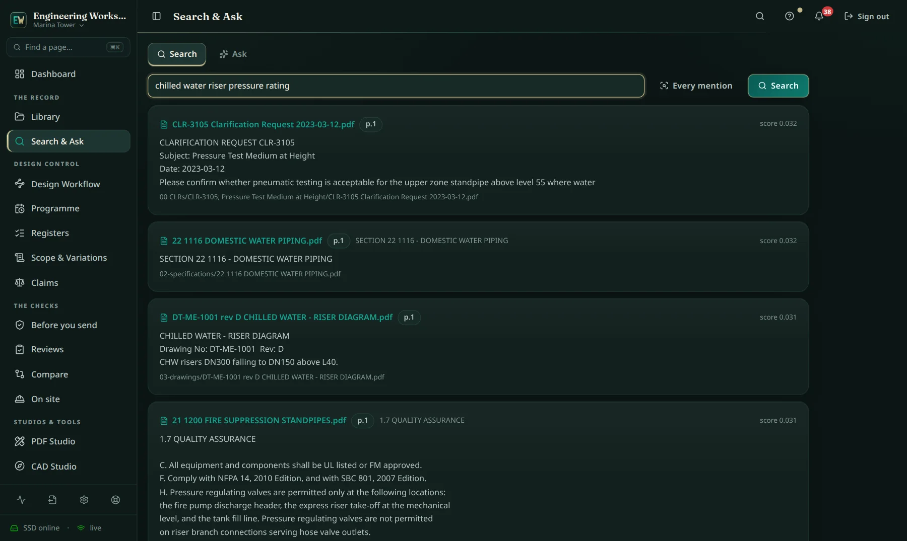
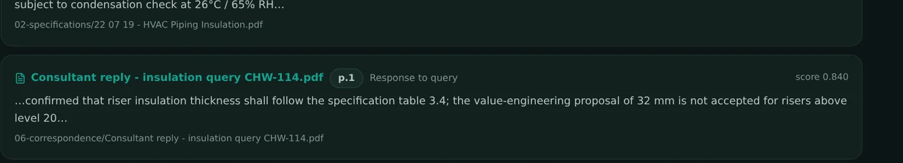
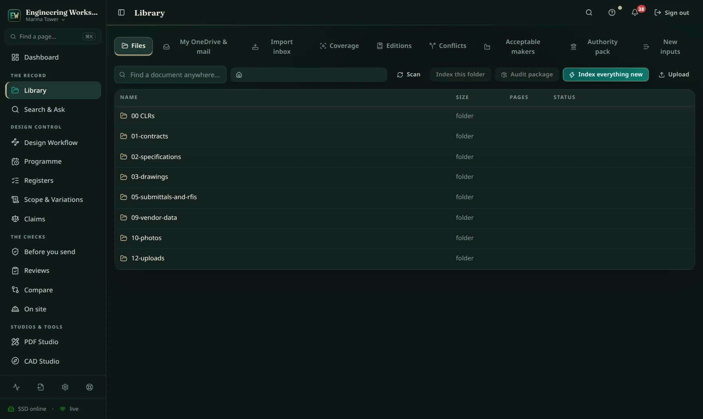

The archive stops being a place where answers go to hide. Ask in plain language; get the clause, the reply, the drawing note and the calculation — each with its page.
“Chilled water riser insulation thickness” returns the specification table, the consultant's refusal of the VE proposal, the drawing legend note and the condensation check — ranked, scored, page-cited.


A result is only useful in engineering if you can cite it. Every passage carries its document and page — paste it into a reply to the consultant and stand behind it.
Folders you recognise, indexed status on every document, and files opening from the project, your OneDrive, your mail attachments or this computer.

The intelligence engine, spelled out.
"The field" is the usual toolchain — the per-user construction cloud and the separate applications around it. Good tools; the difference here is one integrated record, on your own server.